Data Science for Electron Microscopy
Week 9: Probability, uncertainty & Gaussian processes
FAU Erlangen-Nürnberg
Institute of Micro- and Nanostructure Research


Recap: Week 8 and today’s question
- Week 8: autoencoders provide point estimates of the latent code \(z\) — they do not say how confident they are. A spectrum on the phase boundary gets a single code with no indication of ambiguity.
- The remaining gap: the AE says “this pixel is at latent point \(z\)” but gives no error bar. If we use that code to guide an experiment or make an engineering decision, we have no way to know when to trust it.
- Today’s answer: probabilistic models. We replace point predictions with distributions over predictions — and we choose our error bars in a principled, honest way.
- Concrete payoff: a Gaussian Process fitted to a handful of expensive EELS measurements gives calibrated ±2σ bands; the band widens exactly where we have no data, telling us where to measure next.
- Forward link to Week 10: that “where should we measure next?” question is active learning — the direct application of today’s uncertainty estimates to automated EM acquisition.
Road map and self-study
- Road map: recap Week 8 + today’s question (2) · why a point prediction is dangerous for EM decisions (3) · probability as the language of uncertainty (2) · aleatoric vs epistemic uncertainty with EM examples (3) · from MLE/MSE to predicting a distribution (3) · Gaussian processes: prior, sampling & kernel (3) · conditioning on data: posterior mean ± uncertainty band (5) · kernels: RBF, amplitude & hyperparameter learning (3) · GP closed-form posterior, uncertainty balloons & limitations (4) · conformal prediction: model-agnostic coverage guarantee (4) · MC-dropout & deep ensembles as practical UQ (3) · calibration: are the error bars honest? (3) · GP for small expensive EM datasets + forward link + notebook summary (4) — 42 content slides total (within the 40–48 target).
- Self-study:
notebooks/week09_gp_uncertainty.ipynb— fit a GP (GaussianProcessRegressor, RBF kernel, CPU, <30 s) to 8 simulated expensive EELS measurements; plot posterior mean ±2σ; observe the band widening away from data; add a measurement and see the local collapse; explore kernel length-scale under/over-smoothing in the exercise.
Why a point prediction is dangerous for EM decisions
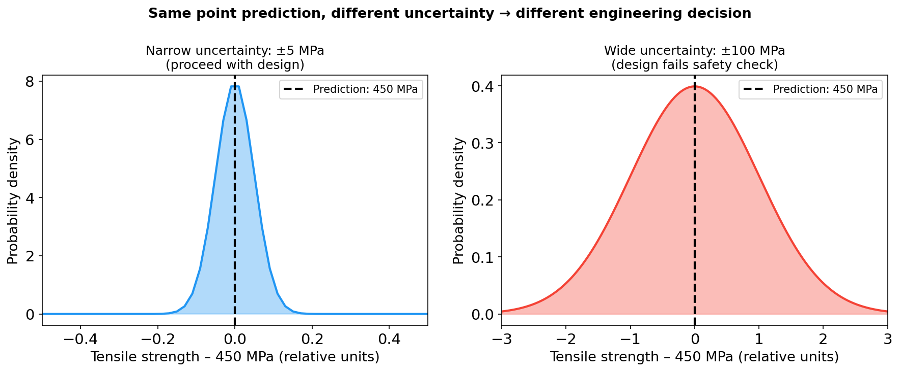
Two distributions with the same point prediction (450 MPa) but radically different uncertainty. Left: ±5 MPa — the part passes the safety factor. Right: ±100 MPa — the design must be rejected. The engineering decision lives entirely in the uncertainty band, not the mean.
When point predictions fail in electron microscopy
- Phase identification from a single number: an AE or CNN predicts “Fe₂O₃” for a boundary pixel. Without a confidence score, you cannot know if this is a clean prediction (far from the decision boundary) or a coin-flip. Misidentification propagates silently into phase maps.
- Extrapolation without warning: a model trained on specimens at 200–500 °C predicts properties at 600 °C with the same apparent confidence. The model does not know it is extrapolating. A GP explicitly widens its band in the extrapolation region. Bishop, Christopher M., (2006)
- Expensive experiment design: spending 8 h of instrument time measuring a composition you already know well wastes resources. A model with honest error bars tells you which composition is most uncertain — and is therefore most worth measuring.
- Safety-critical decisions: structural materials for aerospace or energy applications face certification requirements that demand quantified confidence intervals, not point estimates.
Overconfident models in EM: a concrete failure mode
- Scenario: a CNN trained on EELS spectra from one Fe–O synthesis route predicts oxidation state for a new route (different precursor, different annealing atmosphere).
- What happens without UQ: the model produces a smooth, confident-looking phase map. Errors are silent — there is no “I don’t know” output.
- What we want: a model that says “for this spectrum (outside my training distribution) I predict 0.6 ± 0.3” rather than “I predict 0.6” — so the experimentalist knows to treat it as a hypothesis, not a measurement.
- Root cause: point-prediction models minimise average error on the training set. They have no incentive to express ignorance. Probabilistic models encode ignorance as wide distributions.
Probability as the language of uncertainty
- Data is noisy. Repeated EELS measurements of the same specimen at the same position give different spectra — photon shot noise, detector readout noise, beam instability. Each is a sample from a distribution.
- Models are uncertain. A regression model fitted to 8 measurements cannot uniquely determine the underlying curve — many curves fit the data. Probability encodes the set of plausible curves.
- Probability provides a rigorous, consistent accounting for both sources of uncertainty simultaneously. The same rules — Bayes’ theorem, the sum rule, the product rule — handle both Bishop, Christopher M., (2006).
- Key shift: instead of asking “what is the true value of \(y\)?” we ask “given the data \(\mathcal{D}\), what is the distribution \(p(y^* \mid x^*, \mathcal{D})\)?”
From point estimate to predictive distribution
- What MSE training does: find the single parameter vector \(\hat\theta\) that minimises average squared error on training data. Output: one number \(\hat y = f_{\hat\theta}(x^*)\).
- What a Bayesian model does: maintain a distribution over plausible parameter vectors \(p(\theta \mid \mathcal{D})\). Integrate over all of them to get the predictive distribution:
\[p(y^* \mid x^*, \mathcal{D}) = \int p(y^* \mid x^*, \theta)\, p(\theta \mid \mathcal{D})\, d\theta\]
- The predictive distribution is a complete description of our knowledge. Its mean is the best point prediction; its standard deviation is the honest error bar; its full shape encodes the probability of any outcome.
- For a GP this integral has a closed-form solution — exact Bayesian inference with no approximation. Murphy, Kevin P., (2012)
Aleatoric vs epistemic uncertainty: definitions
- Aleatoric (from Latin alea = dice): irreducible randomness in the data-generating process. The scatter in repeated measurements at the same specimen location — irreducible because it is quantum shot noise. No model, no matter how sophisticated, eliminates it.
- Epistemic (from Greek episteme = knowledge): uncertainty from limited knowledge. We have measured 8 compositions out of infinitely many possible ones. This uncertainty shrinks as we add data.
- The diagnostic test: “Would measuring more of the same kind of data reduce this uncertainty?” Yes → epistemic. No → aleatoric. Bishop, Christopher M., (2006)
- Why it matters for EM decisions: aleatoric uncertainty tells you the achievable precision; epistemic uncertainty tells you where to invest the next instrument-hour.
Aleatoric vs epistemic in EM: visual comparison
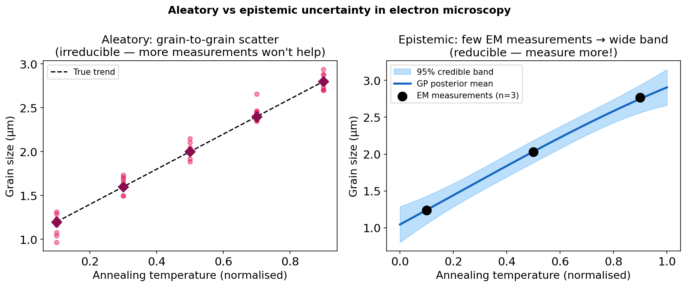
Left: aleatoric uncertainty — grain-to-grain scatter in grain size measurements at a fixed annealing temperature. More measurements reveal the distribution of grain sizes but do not eliminate the scatter (it is real). Right: epistemic uncertainty — a GP fitted to only 3 EELS measurements (filled circles) is uncertain everywhere except near the measured compositions; measuring more narrows the band. Bishop, Christopher M., (2006)
The variance decomposition: separating aleatoric and epistemic
The total predictive variance separates cleanly Murphy, Kevin P., (2012):
\[ \underbrace{\mathrm{Var}[y^*]}_{\text{total}} = \underbrace{\mathbb{E}_\theta[\sigma_\epsilon^2(\theta)]}_{\text{aleatoric}} + \underbrace{\mathrm{Var}_\theta[\mu(\theta)]}_{\text{epistemic}} \]
- Aleatoric term: average noise variance across all plausible models. Does not shrink with data — it is the irreducible measurement noise floor.
- Epistemic term: how much the predicted mean varies across plausible parameter vectors. Shrinks with more data — as parameter uncertainty decreases, different models agree.
- For a GP this decomposition is exact: the noise kernel \(\sigma_n^2\) is the aleatoric term; the posterior variance formula gives the epistemic term.
- Active learning target: collect data where the epistemic term is largest — that is where a measurement buys the most reduction in total uncertainty.
From MLE/MSE to predicting a distribution
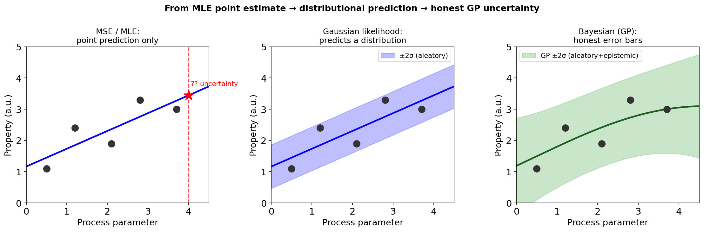
Left: MSE regression gives a flat ±σ band everywhere — it models measurement noise, not the model’s uncertainty about the function. Centre: a Gaussian likelihood (Gaussian noise assumed) gives a band but it does not grow away from data. Right: a GP gives a calibrated band that collapses at observations and widens where no data exists.
Why MSE↔︎Gaussian likelihood and what that implies
- MLE + Gaussian noise = MSE: if we assume \(y = f(x) + \epsilon\) with \(\epsilon \sim \mathcal{N}(0, \sigma^2)\), then maximising the log-likelihood is identical to minimising MSE. This is why MSE is the default loss — it is the correct loss for Gaussian noise.
- What MSE does not give you: the fitted model is a single function \(\hat f\). The uncertainty in the function estimate itself is not captured — MSE treats the function as known once fitted.
- Bayesian extension: instead of a single \(\hat f\), maintain a posterior distribution \(p(f \mid \mathcal{D})\) over plausible functions. The predictive variance then reflects both \(\sigma^2\) (noise) and the uncertainty in which function is correct.
- The GP achieves this exactly by working directly in the space of functions — it is a Bayesian non-parametric model Murphy, Kevin P., (2012).
Fitting a distribution directly: the predictive interval
- The goal: for any new input \(x^*\), produce a distribution \(p(y^* \mid x^*, \mathcal{D})\), not just \(\hat y\).
- The 95% credible interval: \([\mu(x^*) - 2\sigma(x^*),\ \mu(x^*) + 2\sigma(x^*)]\) contains the true value with 95% probability under the model.
- Note on terminology: in Bayesian statistics this is a credible interval, not a confidence interval. The 95% is a statement about our belief given the data, not about the procedure across many datasets.
- Calibration check: a 95% credible interval is calibrated if exactly 95% of test-set observations fall inside it. Miscalibration — too wide (wasteful) or too narrow (dangerous) — is measurable and correctable.
Gaussian processes: a distribution over functions
- A Gaussian Process is a probability distribution over functions (not over numbers or vectors).
- Formally: any finite collection of function values \([f(x_1), \dots, f(x_n)]\) has a joint multivariate Gaussian distribution:
\[f \sim \mathcal{GP}(m(\mathbf{x}),\ k(\mathbf{x}, \mathbf{x}'))\]
- The GP is fully specified by two functions: the mean function \(m(x) = \mathbb{E}[f(x)]\) (usually 0 after centering) and the kernel function \(k(x,x') = \mathrm{Cov}[f(x), f(x')]\).
- Intuition: drawing a sample from a GP gives an entire curve, not a scalar. The GP is the distribution from which plausible curves are drawn before seeing any data.
GP prior: drawing plausible functions before seeing data
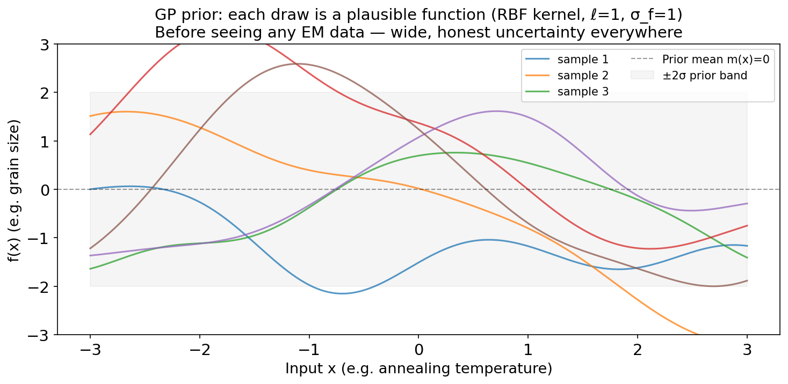
GP prior with RBF kernel (ℓ=1, σ_f=1). Six random function samples are shown. Before any EM data is observed, the prior expresses equal uncertainty everywhere — no composition is known to be better than any other. Each coloured curve is one plausible ‘model’ of the Fe³⁺ fraction vs composition relationship. The grey band shows the ±2σ prior envelope.
GP prior: what the kernel encodes
- The kernel \(k(x,x')\) is the only part of the GP prior that encodes structure about the function. It answers: “if \(f(x)\) is large, how likely is \(f(x')\) to also be large?”
- The RBF (squared-exponential) kernel:
\[k_\mathrm{RBF}(x,x') = \sigma_f^2\exp\!\left(-\frac{(x-x')^2}{2\ell^2}\right)\]
- This kernel encodes: nearby inputs have correlated outputs, far-away inputs are nearly independent.
- Length-scale \(\ell\): controls the range of correlation. At \(|x-x'| \gg \ell\), \(k \to 0\) — the two outputs are independent. At \(|x-x'| \ll \ell\), \(k \approx \sigma_f^2\) — they are nearly identical. Williams, Christopher K. I. et al., (2006)
- Signal amplitude \(\sigma_f^2\): controls how much the function can vary vertically.
Conditioning on data: GP prior → posterior
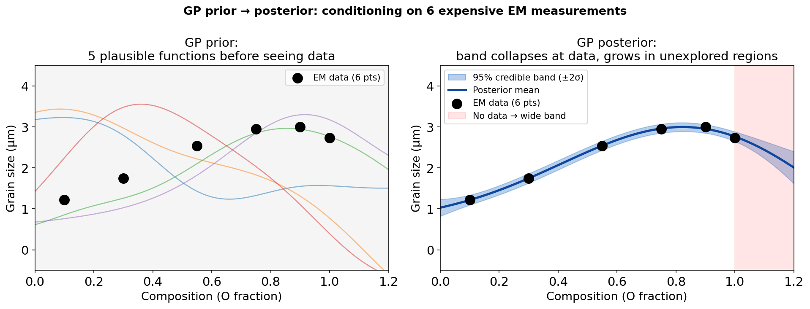
Left: GP prior — 5 plausible curves before seeing any EM data. Right: GP posterior after conditioning on 6 EELS measurements (black dots). The posterior curves are forced through (near) the observations; in the unexplored region beyond x=1.0 (red shading) the band widens back toward the prior.
GP posterior: how conditioning works (intuition)
- Conditioning a Gaussian on observed values is a standard operation from linear algebra. If \((f, f_\mathrm{obs})\) are jointly Gaussian, then \(f \mid f_\mathrm{obs}\) is also Gaussian — same family, updated parameters.
- The GP exploits this: the joint distribution over \([f(x^*), f(x_1), \dots, f(x_N)]\) is a multivariate Gaussian with mean vector \(\mathbf{0}\) and covariance matrix \([K_{ij}] = k(x_i, x_j)\).
- After observing \(y_i = f(x_i) + \epsilon_i\): the conditional distribution \(f(x^*) \mid \mathbf{y}\) is a Gaussian with updated mean and variance.
- The posterior is another GP. The family is closed under conditioning — no approximation enters here. This is why GPs are called “exact Bayesian” regressors. Williams, Christopher K. I. et al., (2006)
GP posterior: conditioning on noisy EM data
- Observe noisy EM data: \(y_i = f(x_i) + \epsilon_i\) with \(\epsilon_i \sim \mathcal{N}(0, \sigma_n^2)\).
- Define the kernel matrix \(\mathbf{K}\) with \([\mathbf{K}]_{ij} = k(x_i, x_j)\) and the cross-vector \(\mathbf{k}_* = [k(x^*, x_1), \dots, k(x^*, x_N)]^\top\).
- The posterior predictive mean at a new input \(x^*\):
\[\mu^*(x^*) = \mathbf{k}_*^\top (\mathbf{K} + \sigma_n^2 \mathbf{I})^{-1} \mathbf{y}\]
- The posterior predictive variance at \(x^*\):
\[\sigma^{*2}(x^*) = k(x^*, x^*) - \mathbf{k}_*^\top (\mathbf{K} + \sigma_n^2 \mathbf{I})^{-1} \mathbf{k}_*\]
These two formulas — closed-form, exact — are all we need for GP regression. Williams, Christopher K. I. et al., (2006)
GP posterior: interpretation in pictures
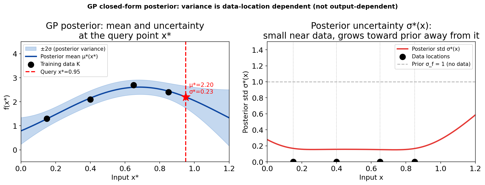
Left: GP posterior mean (blue) and ±2σ band (blue shading) for 4 EELS measurements (black dots). Right: posterior standard deviation σ*(x) as a function of input. The std is near zero at measurement locations and rises toward the prior σ_f=1 in unexplored regions. Observing data can only reduce, never increase, posterior variance.
GP posterior: what ±2σ means
- The 95% credible band: for any input \(x^*\), the interval \([\mu^*(x^*) - 2\sigma^*(x^*),\, \mu^*(x^*) + 2\sigma^*(x^*)]\) contains the true function value \(f(x^*)\) with 95% probability under the GP model.
- Narrow band at data: the GP has seen \(y_i \approx f(x_i)\); the posterior constrains \(f(x^*)\) tightly near these locations. Epistemic uncertainty is small there.
- Wide band away from data: as \(x^*\) moves away from all training points, \(\mathbf{k}_* \to \mathbf{0}\); the posterior variance approaches the prior variance \(\sigma_f^2\). The GP reverts to “I don’t know” in the absence of information. Bishop, Christopher M., (2006)
- Honest extrapolation: unlike a neural net that extends a confident line beyond its training range, the GP explicitly widens its band in extrapolation — the most valuable safety property for engineering decisions.
Kernels: RBF and length-scale effects
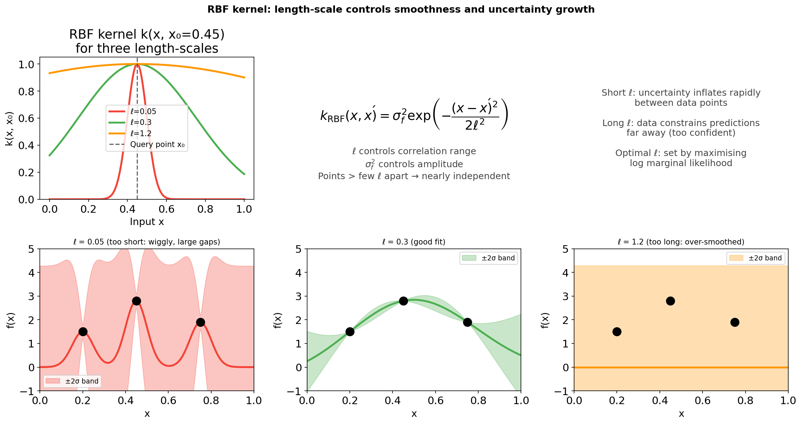
Top-left: the RBF kernel k(x, x₀=0.45) for three length-scales ℓ. Bottom row: GP posteriors with the same 3 training points but different fixed ℓ. Short ℓ (red): wiggly mean, uncertainty inflates rapidly in every gap. Medium ℓ (green): smooth mean, band widens only in the truly unexplored region. Long ℓ (orange): over-smoothed mean, falsely confident extrapolation.
Kernels: amplitude and other kernel families
- Signal amplitude \(\sigma_f^2\): scales the vertical range of function variation. Larger \(\sigma_f^2\) = larger prior uncertainty everywhere. Chosen by maximising the marginal likelihood alongside ℓ.
- Noise level \(\sigma_n^2\): the WhiteKernel. Models measurement noise; allows the GP to pass near observations rather than exactly through them. Separates aleatory (noise) from epistemic (function) uncertainty.
- Matérn kernel (\(\nu=5/2\)): allows less-than-infinitely-smooth functions. More realistic for materials properties that have kinks or discontinuities. Often outperforms RBF in practice.
- Kernel selection: use cross-validation or the log marginal likelihood to compare kernel families. An RBF kernel that is too smooth will underfit a sharp transition; a Matérn-\(\nu=1/2\) (exponential) kernel may overfit kinks. Williams, Christopher K. I. et al., (2006)
Hyperparameter learning: the log marginal likelihood
- We need to choose \(\ell\), \(\sigma_f\), \(\sigma_n\). Too small ℓ: wiggly and overfit. Too large ℓ: smooth and overconfident. Right ℓ: honest error bars. Murphy, Kevin P., (2012)
- Automatic selection via log marginal likelihood:
\[\log p(\mathbf{y} \mid \mathbf{X}) = -\frac{1}{2}\mathbf{y}^\top(\mathbf{K}+\sigma_n^2\mathbf{I})^{-1}\mathbf{y} - \frac{1}{2}\log|\mathbf{K}+\sigma_n^2\mathbf{I}| - \frac{N}{2}\log 2\pi\]
- The three terms penalise: data misfit (first), over-flexible kernel (second), and a normalisation constant (third). This is automatic Occam’s razor — no separate penalty term needed. Bishop, Christopher M., (2006)
- In sklearn:
GaussianProcessRegressor(n_restarts_optimizer=10)maximises this objective from multiple starts. After fitting, inspectgpr.kernel_for the selected hyperparameters.
GP closed-form posterior: two formulas to know
The GP posterior at new input \(x^*\), given training data \(\mathbf{X}, \mathbf{y}\) and noise \(\sigma_n^2\):
\[\boxed{\mu^*(x^*) = \mathbf{k}_*^\top (\mathbf{K} + \sigma_n^2 \mathbf{I})^{-1} \mathbf{y}}\]
\[\boxed{\sigma^{*2}(x^*) = k(x^*, x^*) - \mathbf{k}_*^\top (\mathbf{K} + \sigma_n^2 \mathbf{I})^{-1} \mathbf{k}_*}\]
- \(\mathbf{K} \in \mathbb{R}^{N\times N}\): kernel matrix \(K_{ij} = k(x_i, x_j)\). \(\mathbf{k}_* \in \mathbb{R}^N\): \([\mathbf{k}_*]_i = k(x^*, x_i)\). Training cost: \(O(N^3)\) for the matrix inversion.
- Mean: weighted average of training outputs; weights proportional to kernel similarity to \(x^*\).
- Variance: prior variance minus the reduction from data. Always \(\geq 0\). Approaches \(k(x^*,x^*)=\sigma_f^2\) as \(x^*\) moves away from all training points.
The key intuition: uncertainty balloons away from data
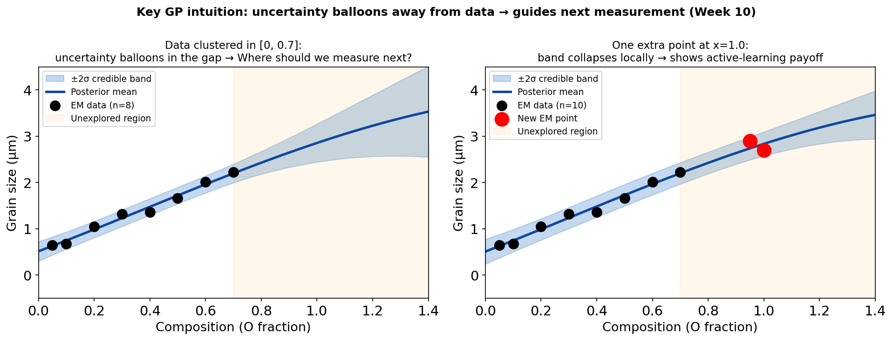
Illustration (generic “grain size vs parameter” example — not the EELS notebook run). Left: GP fitted to 8 measurements with the training cluster in [0,0.7] (as shown on the y-axis). The 95% credible band widens rapidly beyond the data range (red shading) — the GP honestly admits it has no information there. The highest-uncertainty regions are the best candidates for the next measurement. Right: after adding one measurement at x=1.0, the local band collapses (~49% reduction in σ* there) while regions further away remain uncertain. (The EELS notebook uses a cluster in [0.05,0.85] with specific σ* values of 0.1966→0.1003 at x_far=1.15; see the Notebook Summary slide for those numbers.)
GP uncertainty balloons: the formal argument
- As \(x^* \to \infty\) (far from all training data), the kernel vectors \(\mathbf{k}_* \to \mathbf{0}\).
- The variance formula becomes: \(\sigma^{*2}(x^*) = k(x^*,x^*) - \mathbf{0}^\top(\ldots)^{-1}\mathbf{0} = k(x^*,x^*) = \sigma_f^2\).
- The GP reverts to its prior variance — the maximum uncertainty it can express.
- This is an exact result from the posterior formula, not a heuristic. No special code or case-handling needed — it falls out of the math automatically.
- Contrast with neural nets: a neural net extrapolates the function’s value using its learned parameters. It does not widen its band. A GP extrapolates its prior uncertainty — the band expands to the prior width.
GP limitations: the honest scorecard
| Gaussian Process | Deep Neural Network | |
|---|---|---|
| Uncertainty | Exact Bayesian, calibrated | Not built-in (requires add-ons) |
| Training cost | \(O(N^3)\) — limits to \(N \lesssim 10^3\) | \(O(N)\) — scales to millions |
| Input dimension | Scales poorly beyond ~20-D | Handles 1000-D images natively |
| Kernel choice | Requires domain knowledge | Learns features automatically |
| Interpretability | ℓ, σ_f, σ_n are physically meaningful | Weights are uninterpretable |
| Best use case | Small expensive datasets, tabular | Large datasets, images, sequences |
Conformal prediction: model-agnostic coverage guarantee
- Problem: a GP’s 95% credible band is calibrated under the model. If the kernel is wrong (misspecified), coverage can be lower. We want a guarantee that holds without the model being correct.
- Split conformal prediction provides a finite-sample, distribution-free coverage guarantee Angelopoulos, Anastasios N. et al., (2023):
- Split the data: training set + calibration set.
- Fit any predictor on the training set.
- Compute residuals \(|y_i - \hat y_i|\) on the calibration set.
- Set \(\hat q = (1-\alpha)(1 + 1/n_\text{cal})\)-quantile of calibration residuals.
- Output the interval \([\hat y(x^*) - \hat q,\, \hat y(x^*) + \hat q]\) for any new \(x^*\).
- Coverage guarantee: \(\Pr(y^* \in C(x^*)) \geq 1 - \alpha\), for any exchangeable data distribution, any predictor. Angelopoulos, Anastasios N. et al., (2023)
Conformal prediction: visual demonstration
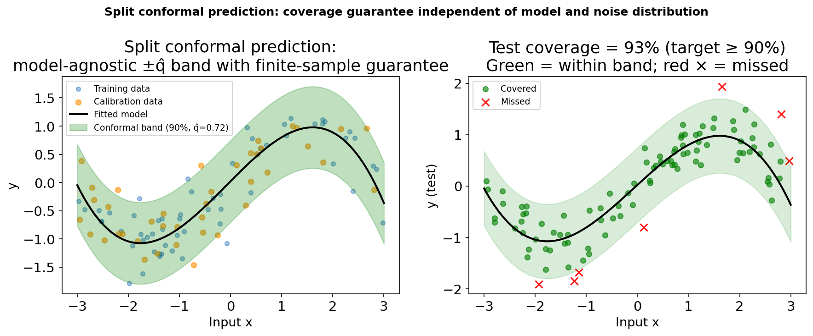
Split conformal procedure. Left: the fitted model (polynomial, deliberately underfit) with ±q̂ band (green). The band width q̂ is computed from calibration-set residuals (orange), not from the model’s own uncertainty estimate. Right: test-set coverage = 93% (target ≥ 90%). Green dots = covered; red × = missed. The conformal guarantee holds regardless of model quality.
Conformal vs GP: when to use each
- Conformal strengths: model-agnostic — wraps any predictor. Finite-sample coverage guarantee without distributional assumptions. Easy to implement (one quantile computation). Ideal for deploying any trained model with a certified error bar.
- GP strengths: principled uncertainty that varies with input location (wide gaps → wide band). Interpretable hyperparameters. Enables active learning (measure where σ* is largest). Better for exploration.
- Combined use: fit a GP for uncertainty-guided exploration. Apply split conformal to certify the deployed model’s predictions for safety-critical decisions.
- Common mistake: using training-set residuals instead of calibration-set residuals for the conformal quantile. This breaks the coverage guarantee. Always use a held-out calibration set.
Conformal prediction: key properties
| Property | Split Conformal | GP Credible Band |
|---|---|---|
| Coverage guarantee | Finite-sample, distribution-free | Asymptotic, model-dependent |
| Band width | Constant (per \(x^*\)) | Varies with distance from data |
| Model required | Any trained predictor | GP posterior |
| Active learning | Not directly | Natural (maximise σ*) |
| Computationally | Trivial (sort residuals) | \(O(N^3)\) inversion |
Rule of thumb: use conformal to certify; use GP to explore. Angelopoulos, Anastasios N. et al., (2023)
MC-dropout: uncertainty from a single trained network
- Standard dropout (training only): randomly zero out neurons with probability \(p\). Prevents co-adaptation, reduces overfitting.
- MC Dropout Gal, Yarin et al., (2016): keep dropout active at inference. Run \(T\) stochastic forward passes through the same network. Each pass uses a different random mask → \(T\) different predictions.
- Mean of \(T\) passes: best prediction. Variance of \(T\) passes: approximate epistemic uncertainty.
- Cost: \(T\) forward passes at test time. Zero additional training cost — uncertainty is free from an already-trained network.
- For EM: a U-Net trained with dropout for phase segmentation; at inference, \(T=30\) passes give a per-pixel confidence map. High variance pixels are on phase boundaries.
Deep ensembles: best practical UQ for neural networks
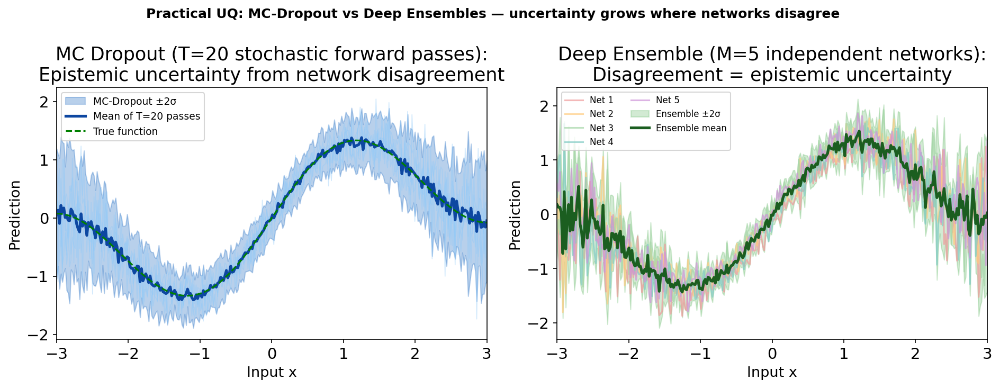
Left: MC Dropout — 5 stochastic forward passes (light blue) and the mean ±2σ band. The band widens reasonably away from data but can be sensitive to the dropout rate. Right: Deep ensemble of 5 independently trained networks (different random initialisations and data shuffles). Each network is one coloured curve; the green band is mean ±2σ. Ensembles are empirically the best-calibrated NN uncertainty method Lakshminarayanan, Balaji et al., (2017).
MC-dropout vs deep ensembles: comparison
| MC Dropout | Deep Ensembles | |
|---|---|---|
| Training cost | 1× (same as baseline) | M× (M full training runs) |
| Inference cost | T forward passes | M forward passes |
| Calibration quality | Approximate, sensitive to dropout rate | Best empirical calibration Lakshminarayanan, Balaji et al., (2017) |
| Diversity | Same local optimum (dropout masks) | M distinct local optima |
| EM application | Per-pixel uncertainty in segmentation | High-stakes property regression |
| Theoretical basis | Approximate VI via dropout | Ensemble disagreement (frequentist) |
Rule of thumb: MC Dropout if a single trained network already exists and compute is tight. Deep ensemble if budget allows and calibration quality is critical.
Calibration: are the error bars honest?
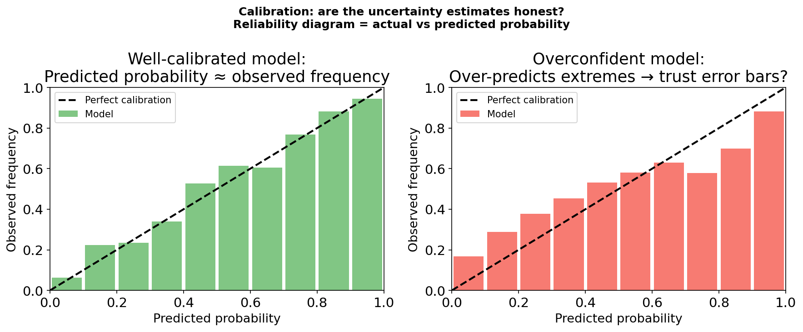
Left: a well-calibrated model — the predicted probability matches the observed frequency in each bin. Points scatter around the diagonal. Right: an overconfident model — predicted extremes (>90%, <10%) map to more moderate observed frequencies. This model’s error bars are too narrow: it is more wrong than it admits. The reliability diagram is the standard diagnostic.
Calibration metrics and how to improve them
- Expected Calibration Error (ECE): average over bins of \(|(\text{predicted probability}) - (\text{observed frequency})|\). ECE = 0 is perfect. ECE > 0.1 is concerning.
- Reliability diagram: plot predicted probability vs observed frequency. A calibrated model follows the diagonal \(y=x\). Points above the diagonal = underconfident. Points below = overconfident.
- Temperature scaling: divide logits by learned scalar \(T > 1\) to soften predictions (\(T > 1\) reduces overconfidence). Applied post-hoc to a trained model — does not change the model.
- Conformal prediction as calibration: conformal wraps any model and guarantees coverage. It is the most principled post-hoc calibration: the calibration set is used to set the interval width exactly right.
Calibration: EM-specific considerations
- Domain shift destroys calibration. A GP or NN calibrated on Fe–O systems from one microscope may be badly calibrated on a different microscope (different aberrations, different detector gain, different specimen preparation). Always re-calibrate on data from the target instrument.
- The calibration set must match the test distribution. For EM: the calibration set should use the same microscope, sample preparation protocol, and acquisition settings as the intended deployment. A “calibration set” from a different lab is not a valid calibration set.
- Small calibration sets give wider (more conservative) intervals. Split conformal always guarantees coverage ≥ 1-α regardless of \(n_\text{cal}\). With small \(n_\text{cal}\) the intervals are slightly wider than necessary (conservative); with \(n_\text{cal} = 200\) the excess width is negligible. Use the largest feasible calibration set to get tighter, less wasteful intervals.
- Calibrate on outcomes, not residuals. For regression, check the reliability diagram using actual coverage fractions across the input domain, not just mean residuals.
GP for small expensive EM datasets
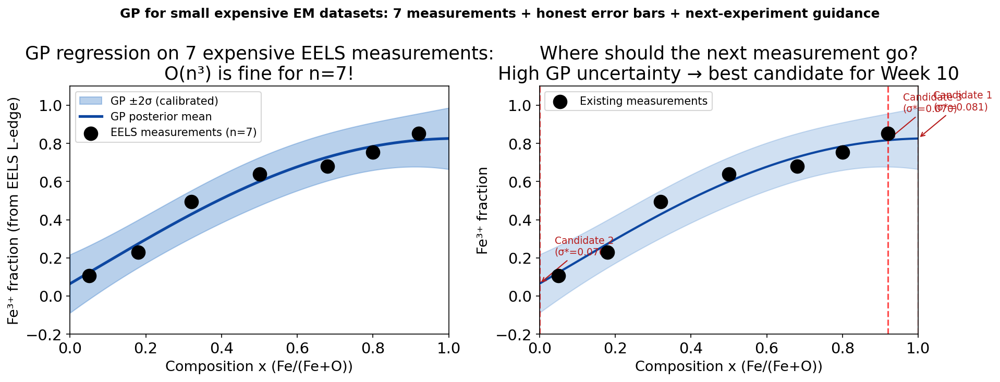
Left: GP regression on 7 EELS measurements of Fe³⁺ fraction vs composition. The O(n³) cost is trivial for n=7. The posterior mean (blue) follows the S-curve; the ±2σ band (light blue) is tight in the measured region and wide beyond. Right: the three highest-uncertainty composition candidates for the next measurement are marked (red dashed lines). The GP tells the experimentalist where to measure next to reduce uncertainty most efficiently.
GP limitations and practical tips for EM
- \(O(N^3)\) cost: for \(N \leq 500\) EM measurements this is fast (< 1 s). For \(N \geq 2000\), use sparse GP approximations (inducing points) — available in
GPyTorchandGPflow. - Kernel choice matters: RBF assumes infinitely smooth functions. Materials property curves often have kinks (phase transitions). Try Matérn-5/2 (allows moderate roughness). Compare marginal likelihoods.
- Normalise inputs and outputs: GP kernels are scale-sensitive. Always centre and scale both \(x\) (to [0,1]) and \(y\) (to zero mean, unit variance) before fitting. De-normalise predictions afterwards.
- Multi-dimensional inputs (e.g. temperature × composition): the RBF kernel generalises to \(k(\mathbf{x},\mathbf{x}') = \sigma_f^2 \exp(-\frac{1}{2}(\mathbf{x}-\mathbf{x}')^\top \mathbf{L}^{-2}(\mathbf{x}-\mathbf{x}'))\) with a separate length-scale per dimension. This is Automatic Relevance Determination (ARD) — it down-weights irrelevant input dimensions.
Forward link: Week 10 — Active & automated electron microscopy
- Today’s remaining gap: we have honest uncertainty estimates — the GP’s σ(x). Now we need a principled strategy for using* those estimates to guide acquisition.
- Week 10’s framework: Bayesian optimisation (BO) formalises the “measure where uncertainty is largest” intuition as an acquisition function — typically Upper Confidence Bound (UCB) or Expected Improvement (EI).
- BO loop for EM: (1) fit GP to current measurements; (2) optimise acquisition function to find next composition/condition; (3) measure; (4) update GP; (5) repeat until budget exhausted or convergence.
- The connection: today’s GP posterior is the model inside the BO loop. The GP uncertainty (σ) is the exploration signal. Week 10 adds the exploitation signal* (prefer high predicted values) and combines them into the acquisition function.
- Concrete EM payoff: with 20 budget measurements and a BO strategy, find the composition that maximises a target property (e.g. Fe³⁺ fraction ≥ 0.8) with fewer experiments than a grid search.
Notebook summary: Week 9 key results
- Dataset: 8 synthetic EELS measurements of Fe³⁺ fraction vs composition, Gaussian noise σ=0.03, random seed 42.
- Model:
GaussianProcessRegressor(sklearn), RBF + WhiteKernel, optimised via log marginal likelihood (n_restarts_optimizer=10). Optimised kernel: \(0.476^2 \cdot \mathrm{RBF}(\ell=0.373) + \mathrm{WhiteKernel}(\sigma_n^2=0.000172)\). - Uncertainty far vs near (SEED=42): predictive std at \(x_\mathrm{near}=0.659\) (dense training cluster) \(= 0.0145\); at \(x_\mathrm{far}=1.15\) (no data) \(= 0.1966\). Ratio: 13.5× — the band at the unexplored location is 13× wider.
- Adding a point at \(x=1.0\): reduces σ* at \(x_\mathrm{far}=1.15\) from 0.1966 to 0.1003 (49% reduction). Effect on x_near: +6.5% (negligible — far-away data barely affects nearby regions).
- Exercise: with fixed length-scale ℓ=1.2 (too long), the GP extrapolates with falsely narrow bands — the dangerous case. With ℓ=0.05 (too short), σ* inflates in every gap between adjacent points.
- Assert checks: all four pass on SEED=42: (1) std_far > std_near; (2) adding a point reduces std_far; (3) far-point has minimal effect near data; (4) far/near ratio > 5.
Continue
References

©Philipp Pelz - FAU Erlangen-Nürnberg - Data Science for Electron Microscopy